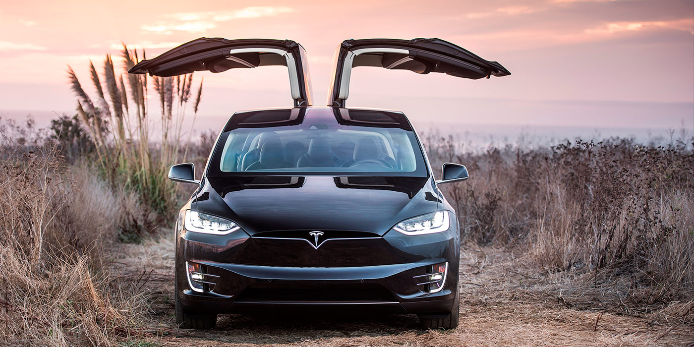

9 моделей Tesla, которые удивили мир
Доступный электрокар, родстер в космосе, быстрейший в мире автомобиль и другие модели компании Илона Маска
Tesla выпустила миллионный по счету электрокар, став первой компанией в истории, которой удалось собрать семизначное количество машин с электрическими силовыми установками. Вспоминаем самые главные автомобили американской марки.
Tesla Roadster
Первый автомобиль в истории Tesla появился перед публикой весной 2006 года, однако его серийная сборка началась двумя годами позже. С 2008 по 2012 год было выпущено чуть более 2,5 тыс. спортивных электрокаров стоимостью свыше 100 тыс. долларов. Tesla Roadster,созданный на базе Lotus Elise, способен ускоряться до «сотни» менее чем за 4 с, а его максимальная скорость ограничена 200 км в час. А в 2018 году личный Roadster главы компании Илона Маска стал первым автомобилем, отправленным в космос. Он полетел на ракете Falcon Heavy фирмы SpaceX.
- Характеристика:
- 53 кВт·ч — тяговая батарея;
- 350 км — максимальный пробег на одном заряде;
- 200 км/ч — максимальная скорость;
- 3,7 секунд — за столько разгоняется до 100 км/ч;
- 2450 машин — продано за всю историю модели «Тесла Родстер».
Tesla Model S
Лифтбек Model S, вставший на конвейер в 2012 году и выпускающийся по сей день, стал первой по-настоящему массовой моделью Tesla. Через несколько лет после запуска электрокара его продажи исчислялись уже десятками тысяч. Вместе с появлением model Sкомпания начала развивать сеть фирменных зарядных станций Supercharger как у себя на родине в США, так и за их пределами. У модели есть и относительно доступные версии ценой в 70 тыс. долларов, и куда более дорогие модификации с воистину космической динамикой.

- Характеристика:
- 85-100 кВт·ч — тяговая батарея (зависит от версии/поколения);
- 560-629 км — пробег на одном заряде;
- 262 км/ч — предел скорости;
- 2,4 секунды — разгон до 100 км/ч.
Tesla Model X
Прототип первого кроссовера Tesla дебютировал в год запуска Model S, однако серийное производство Model X началось только спустя три года — в конце 2015-го. Особенностью SUV стали автоматические задние двери необычной конструкции, которые в компании назвали «крыльями сокола». Они, в отличие от обычных «крыльев чайки» с жесткой Г-образной формой, имеют сгиб с изменяемым углом. Благодаря этому кроссовер может влезть в самое узкое парковочное место, оставив всего 30 см до стены или другого автомобиля. А еще Model X стал одним из первых серийных кроссоверов с характеристиками суперкара. Топовая версия модели с 772-сильной установкой разгоняется до «сотни» за 3,2 с — быстрее, например, Lamborghini Gallardo.

- Характеристика:
- 60-100 кВт·ч — тяговая батарея (отличаются по версиям);
- 490-564 км — дальность хода на одном заряде;
- 262 км/ч — максимальная скорость;
- 2,7 секунд — время до 100 км/ч.
Tesla model 3
Tesla Model 3, дебютировавшая четыре года назад, задумывалась с оглядкой на массовый рынок и стала самой доступной моделью американской марки. Всего через два дня после премьеры в марте 2016 года Tesla получила более 200 тыс. предварительных заявок на покупку Model 3, а к середине 2017 года число заказов перевалило отметку в полмиллиона. В прошлом году американская компания открыла новое предприятие в китайском Шанхае, которое при выходе на полную мощность позволит увеличить объем производства Model 3 до 150 тыс. машин в год.

- Характеристика:
- 54-79,5 кВт·ч — тяговая батарея (отличаются в версиях и поколениях);
- 402-518 км — пробег с полным зарядом;
- 260 км/ч — пороговая скорость;
- 3,2 секунды — показатель разгона 100 км/ч.
Tesla model Y
Уже в середине марта нынешнего года стартуют поставки компактного кроссовера Model Y, который разделит основные узлы и агрегаты с Model 3. Он должен стать самой популярной моделью Tesla, которую будут выпускать в США, Китае, а также на первом европейском предприятии американской марки, которое сейчас строят в Германии в пригороде Берлина. Кроссовер в «старшей» модификации сможет ускоряться до «сотни» за 3,5 с, а его максимальная скорость составит 250 км в час. При полностью заряженных аккумуляторах автомобиль проедет более 450 километров.

- Характеристика:
- 74 кВт·ч — тяговая батарея;
- 370-506 км — дальность хода на полном заряде;
- 249 км/ч — скорость максимум;
- 3,5 секунд — разгон до 100 км/ч.
Tesla Semi
На данный момент Tesla готовится вывести на рынок еще несколько совершенно разных моделей. Так, американцы ведут активные испытания электрической фуры Semi, прототип которой показали в конце 2017 года. Серийный тягач укомплектуют четырьмя электрическими агрегатами, позволяющими грузовику ускоряться до 100 км/ч всего за 5 с, а с прицепом массой в 40 т — за 20 секунд. Топовая версия грузовика, стоимость которого составит около 180 тыс. долларов, сможет проехать без подзарядки батарей до 1000 километров. В компании рассчитывают выпускать до 100 тыс. электрических фур ежегодно. Во всяком случае, глава компании Илон Маск назвал такие цифры «разумным» показателем.

- Характеристика:
- 500-900 кВт·ч — тяговая батарея;
- 805 км — дальность хода на 100% заряда;
- 97 км/ч — крейсерская скорость под уклон 5%;
- 5 секунд — разгон до 100 км/ч без прицепа;
- 20 секунд — разгон до 100 км/ч с гружёным прицепом.
Tesla Roadster 2
В ноябре 2017 года вместе с электрической фурой дебютировал прототип нового суперкара американской марки, который должен стал идеологическим преемником первой модели Roadster. Одноименный концепт-кар оснащен тремя электромоторами, позволяющими купе набирать «сотню» быстрее 2 с и разгоняться до невероятных 400 км в час. При этом тест-пилоты говорят, что это пока очень осторожные предварительные показатели, а серийный электрокар будет еще динамичнее и станет одним из самых быстрых автомобилей в мире.

- Характеристика:
- 74 кВт·ч — тяговая батарея;
- 370-506 км — дальность хода на полном заряде;
- 249 км/ч — скорость максимум;
- 3,5 секунд — разгон до 100 км/ч.
Tesla Cybertruck
Электрический пикап Tesla — это, пожалуй, одна из самых обсуждаемых автомобильных новинок нескольких последних месяцев. Кузов автомобиля Cybertruck, сделанный из стали для космических ракет SpaceX, стилизовали под машины из вселенной фильма «Бегущий по лезвию». Именно внешность новинки, которую называют слишком примитивной, стала объектом наиболее ожесточенных споров. Тем не менее Tesla уже получила на свой первый пикап свыше полумиллиона предварительных заказов. Топовый трехмоторный вариант модели под названием Tri Motor разгоняется с места до «сотни» менее чем за три секунды. Заявленный запас хода без подзарядки в зависимости от модификации варьируется от 400 д о 800 километров.

- Характеристика:
- 500-900 кВт·ч — тяговая батарея;
- 805 км — дальность хода на 100% заряда;
- 97 км/ч — крейсерская скорость под уклон 5%;
- 5 секунд — разгон до 100 км/ч без прицепа;
- 20 секунд — разгон до 100 км/ч с гружёным прицепом.
Tesla Хетчбек
Tesla готовит к запуску еще одну модель, предназначенную преимущественно для китайского и европейского рынков. Не исключено, что это будет компактный городской электрохэтчбек, разработанный в новом европейском дизайн-центре под руководством Франца фон Хольцхаузена, который работает в «Тесле» с момента появления Model 3. Прежде специалист трудился в Volkswagen, Pontiac, Saturn и Mazda.

- Характеристика:
- 60-100 кВт·ч — тяговая батарея (отличаются по версиям);
- 490-564 км — дальность хода на одном заряде;
- 262 км/ч — максимальная скорость;
- 2,7 секунд — время до 100 км/ч.
- Снятые с производства модели Tesla
- Tesla Model 3 Mid Range.
- Tesla Model X 90D.
- Tesla Model S 90D.
- Tesla Model X P90D.